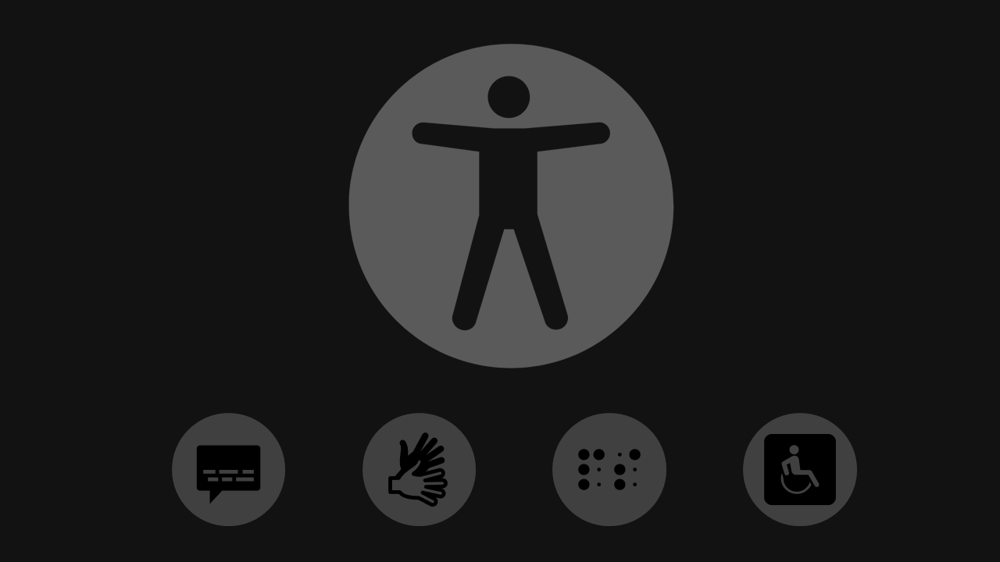

The Web Content Accessibility Guidelines (WCAG) 2.2 covers a wide range of recommendations for making web content more accessible. Following these guidelines will make content more accessible to a wider range of people with disabilities, including accommodations for blindness and low vision, deafness and hearing loss, limited movement, speech disabilities, photosensitivity, and combinations of these, and some accommodation for learning disabilities and cognitive limitations; but will not address every user need for people with these disabilities.

Perceivable
Users must be able to perceive the information.
1.1 Text Alternatives
Provide text alternatives for non-text content (see success criteria A).
1.2 Time-based Media
Provide captions, transcripts, and audio descriptions (see success criteria A–AAA).
1.3 Adaptable
Ensure content can be presented in different ways (see success criteria A–AA).
1.4 Distinguishable
Make content easy to see and hear (see success criteria A–AAA).
Operable
Users must be able to operate the interface.
2.1 Keyboard Accessible
All functionality available via keyboard (see success criteria A).
2.2 Enough Time
Provide users enough time to interact (see success criteria A–AAA).
2.3 Seizures & Physical Reactions
Avoid content that may trigger seizures (see success criteria A–AAA).
2.4 Navigable
Provide ways to navigate and find content (see success criteria A–AAA).
2.5 Input Modalities
Support different input methods (touch, gestures) (see success criteria A–AAA).
Understandable
Users must understand information and operation.
3.1 Readable
Make text readable and understandable (see success criteria A–AAA).
3.2 Predictable
Ensure consistent and predictable behavior (see success criteria A–AA).
3.3 Input Assistance
Help users avoid and correct mistakes (see success criteria A–AA).
Robust
Content must work with different technologies.
4.1 Compatible
Ensure compatibility with assistive technologies (see success criteria A–AA).
Learn More
WCAG 2.2 success criteria are written as testable statements that are not technology-specific. Guidance about satisfying the success criteria in specific technologies, as well as general information about interpreting the success criteria, is provided in separate documents. See Web Content Accessibility Guidelines (WCAG) Overview for an introduction and links to WCAG technical and educational material. WCAG 2.2 extends Web Content Accessibility Guidelines 2.1. Content that conforms to WCAG 2.2 also conforms to WCAG 2.0 and WCAG 2.1.